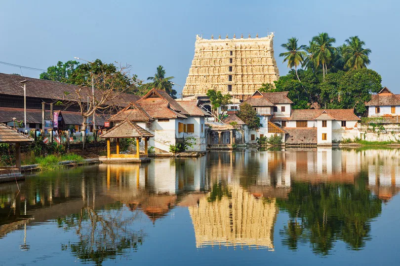
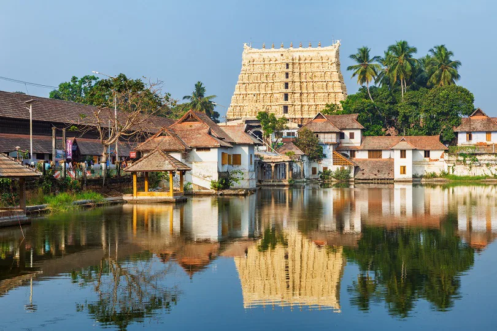
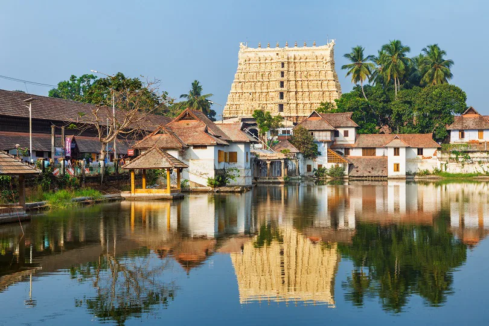
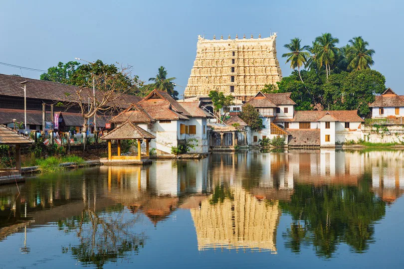

Thiruvananthapuram is a major tourist hub in India.[124] Kovalam and Varkala are popular beach towns near the city. Other important beaches include Poovar, Shankumugham Beach, Azhimala Beach, Vizhinjam Beach and Veli Beach. The Padmanabhaswamy Temple located at the heart of the city is known as the richest place of worship in the world.[132] Other places of interest include Agasthyamala rain forests, Neyyar Wildlife Sanctuary, Kallar, Braemore, Ponmudi hills, Poovar, Anchuthengu backwaters, Varkala Cliffs and Kappil-Edava lakes. The city is also known for its unique style of architecture involving Kerala Architecture with British and Dravidian influences.[133] Napier museum, Thiruvanathapuram Zoo, Padmanabha Swamy temple, Kuthira Malika palace, Kilimanoor palace and The Thiruvananthapuram Golf Club heritage building are examples of this.